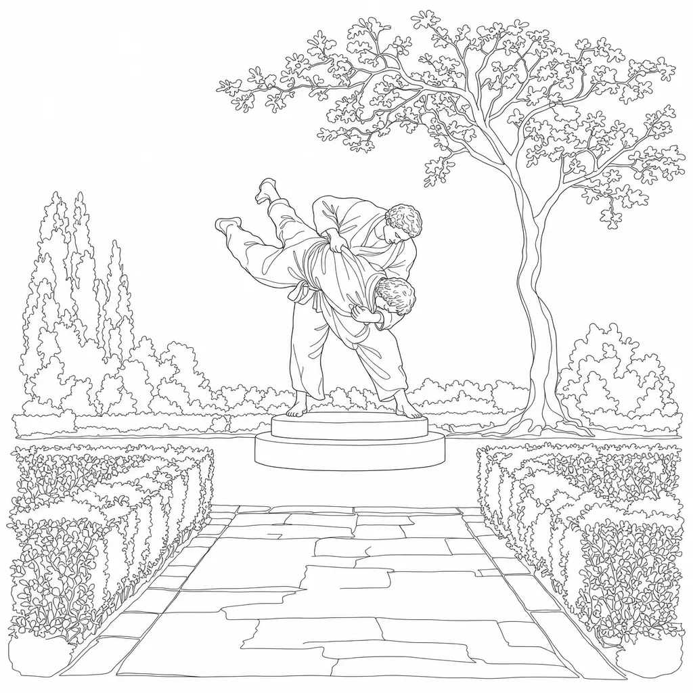
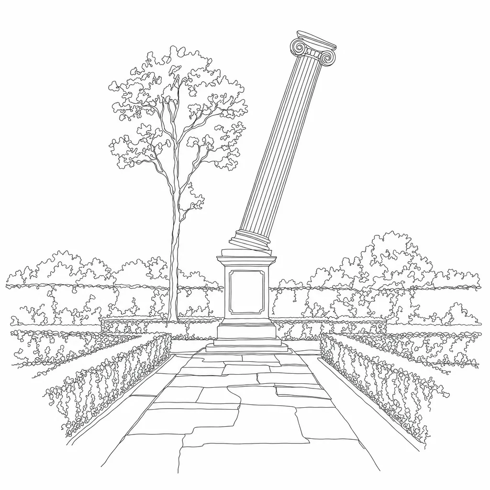
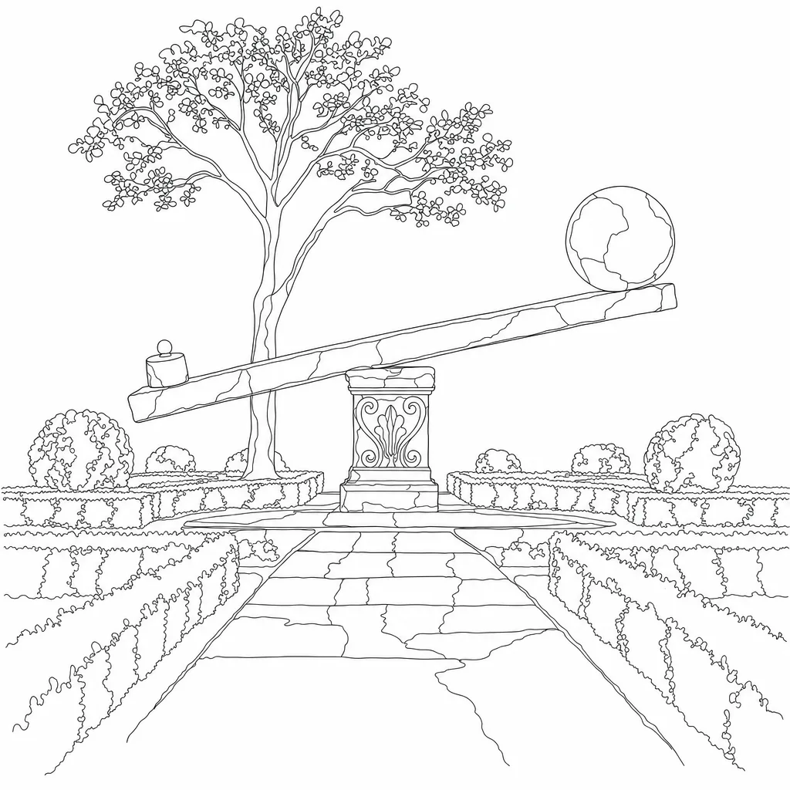
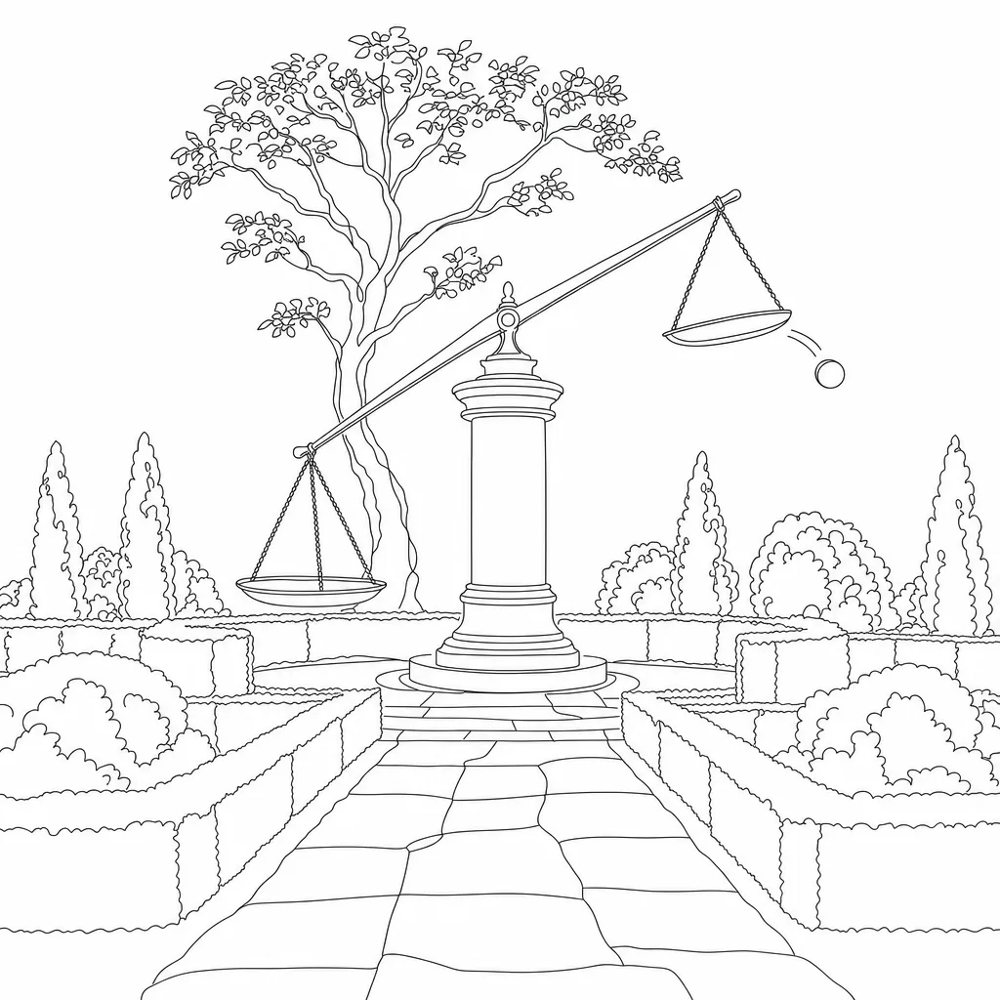
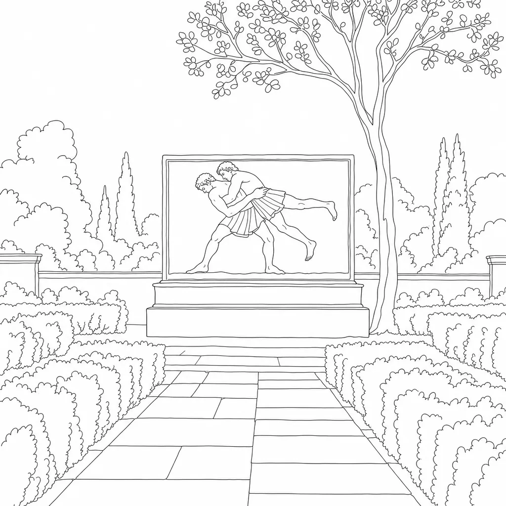
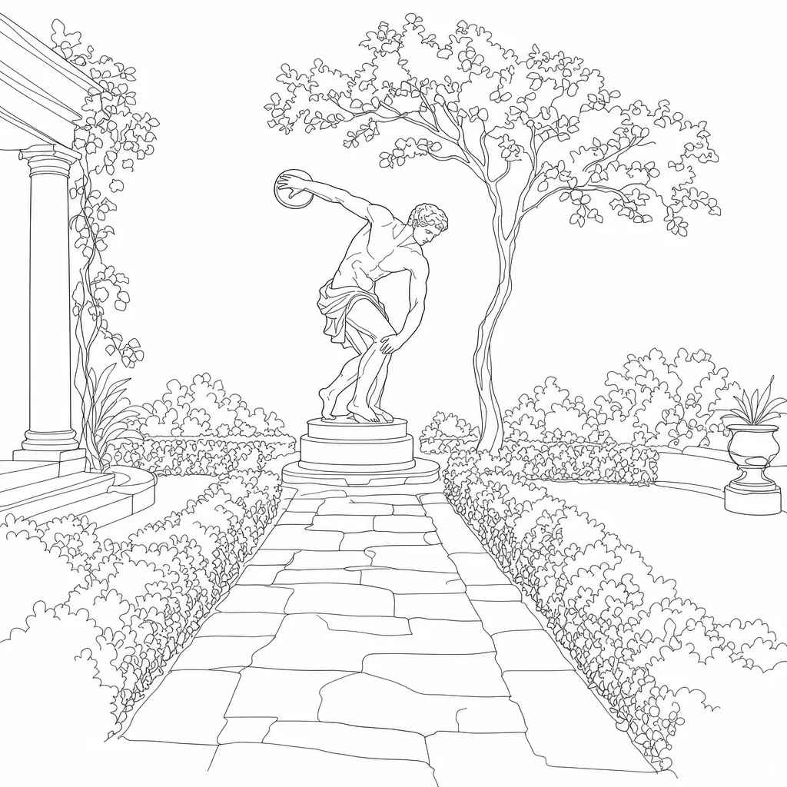
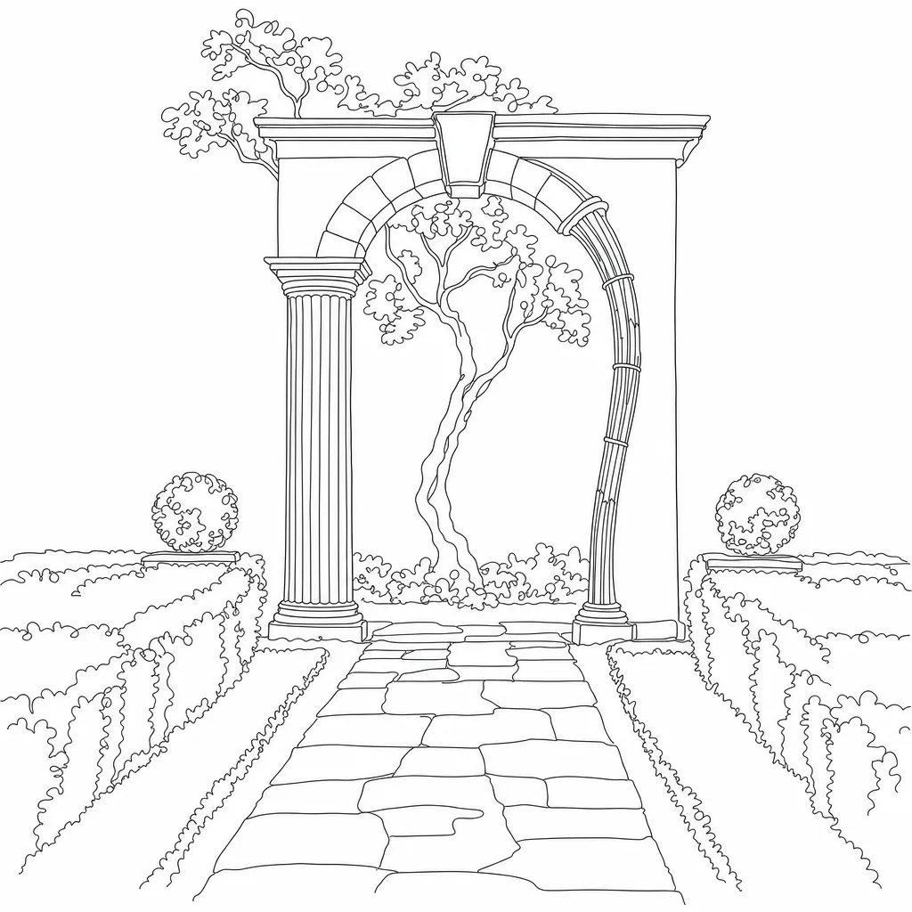

Idea Literal judo: hip throw (o-goshi) carved on a stele.
Fit Garden formula matches, but the gi/belt/bare feet read as a modern dojo scene dropped into a classical garden — the mismatch Kyle flagged.

Idea Kuzushi — the instant past the tipping point; the throw is already decided before the fall.
Fit The strongest fit: a single classical column on a pedestal is the set's native vocabulary (column-ruin, emblem-column). The diagonal is the only thing that breaks the set's verticals, which is exactly the point. Crop keeps the lean and the pedestal.

Idea Seiryoku zen'yo — maximum efficiency, minimum effort; a small weight moving a great mass through leverage.
Fit Stone beam, carved block, marble sphere: all classical garden furniture. The long horizontal beam is the best-suited composition for a 5/3 crop. Slight risk it reads as a playground seesaw at small sizes.

Idea Off-balance / breaking posture — one pan dropped, the beam thrown hard, a sphere rolling off the high end.
Fit Pedestal-in-garden framing matches product-daylight almost one-for-one. The scale reads as "justice" first though, which pulls toward Daylight Legal rather than judo. Crop keeps the whole beam.

Idea The throw itself, but in the Greek athletic tradition: two wrestlers on a relief frieze, one lifted off his feet.
Fit Kyle's "closest literal" option. Relief panel on a plinth is the same device as the current stele, minus the gi. Figures shrink in the tile crop; the dark-mode version reads best. Note: the generator rejected the first prompt (nudity); the rephrase put them in short tunics.

Idea Timing and the pivot — the coiled instant before release, weight on one foot.
Fit The most "museum-classical" of the six and the most finely drawn, but it is a generic Greek statue; it says "athletics" more than "judo." The extra portico on the left adds clutter the other product tiles don't have.

Idea Ju — yielding vs resisting: one rigid column, one reed-like pilaster that bows and still holds the keystone.
Fit Archway + hedges + path sits naturally beside product-margin's alcove arch. The metaphor is the most literal "gentle way" of the set, but the bowed side reads as a drawing error at thumbnail size; the crop also loses the keystone.